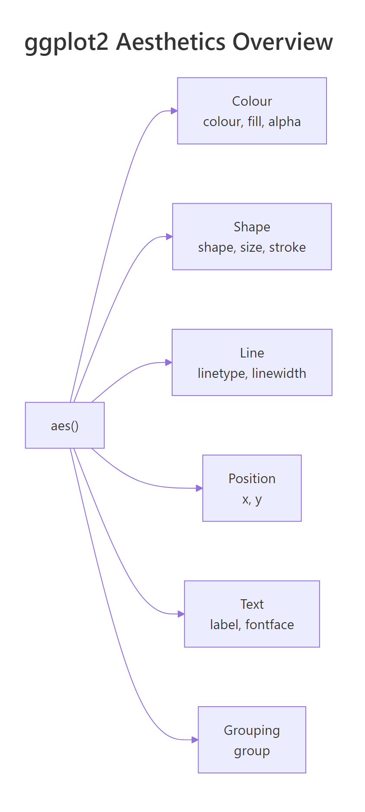
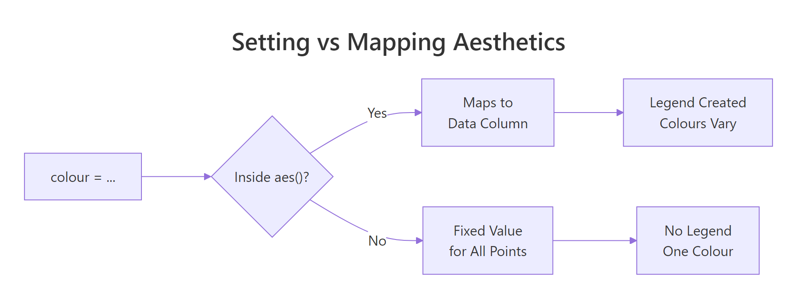
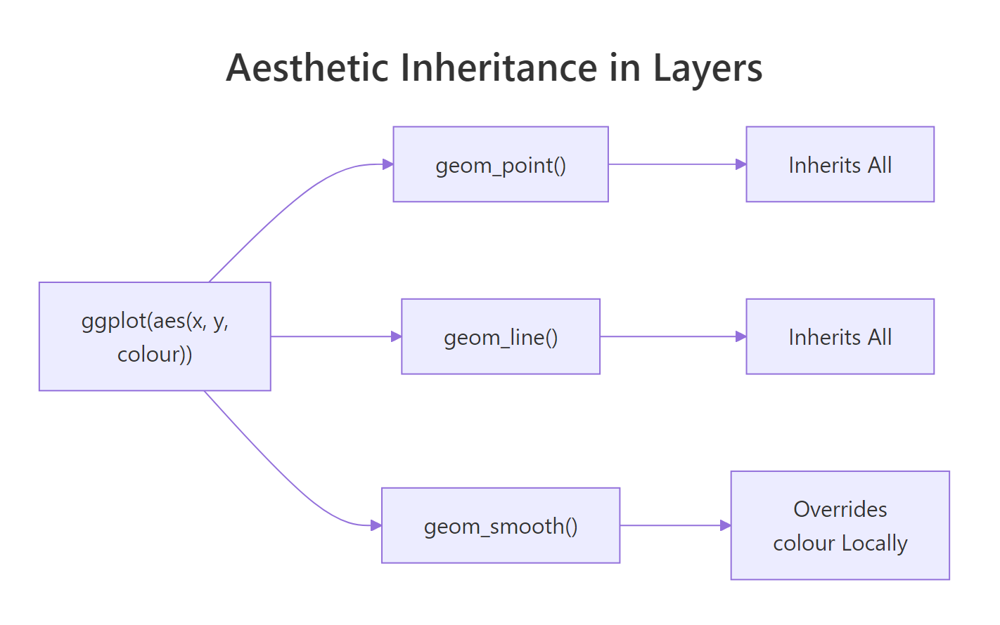

ggplot2 aes(): Map Any Variable to Any Visual Property — The Complete Reference
The aes() function maps columns in your data to visual properties — colour, fill, size, shape, alpha, and linetype — so ggplot2 automatically varies those properties across data values and generates a matching legend.
Introduction
Every ggplot2 plot starts with aes(), but most tutorials stop at aes(x, y). That barely scratches the surface. The aes() function can map any variable to any visual property — colour, fill, size, shape, transparency, line type, and more.
Think of aes() as a translator. Your data frame speaks in column names. The plot speaks in colours, sizes, and shapes. aes() sits between them, telling ggplot2: "use this column to control that visual channel." Without aes(), ggplot2 has no idea how to connect your data to what you see on screen.
In this tutorial, you will learn every major aesthetic ggplot2 supports, when to map an aesthetic to data versus set it to a fixed value, how layers inherit aesthetics from the global ggplot() call, and how to override default scales. Every code block runs directly in your browser — click Run to see results instantly.

Figure 1: The six families of aesthetics available in aes().
What does aes() actually do?
aes() creates a mapping object — a set of instructions that links column names to visual properties. It does not draw anything by itself. A geom reads those instructions and decides how to render each observation.
Let's start with the simplest scatter plot. We map displ (engine displacement) to the x-axis and hwy (highway miles per gallon) to the y-axis using the built-in mpg dataset.
So far we have two aesthetics: x and y. Now let's add a third — colour — to reveal which vehicle class each point belongs to.
Each class gets a distinct colour, and ggplot2 automatically generates a legend. That is aes() at work — it mapped the class column to the colour visual channel.
Try it: Add size = cyl inside the existing aes() call so that point size reflects the number of cylinders. What happens to the legend?
Click to reveal solution
Explanation: Adding size = cyl inside aes() maps the cyl column to point size. ggplot2 creates a second legend for size alongside the colour legend.
How do you map colour and fill to data?
colour and fill are the two most-used aesthetics after x and y, but they control different things. colour changes outlines and point colours. fill changes the interior of shapes — bars, boxplots, polygons, and area geoms.
Let's see colour on a scatter plot first. Each vehicle class gets a unique hue.
Now let's see fill on a bar chart. The fill aesthetic controls the interior colour of each bar.
The bars are coloured by drivetrain (drv: front, rear, 4-wheel). Notice that colour would only change the bar outlines — fill is what you want for bars.
When you map colour to a continuous variable, ggplot2 switches from discrete hues to a gradient scale.
The legend changes from discrete swatches to a colour bar. City mileage (cty) controls where each point falls on the blue gradient.
Try it: Create a boxplot of hwy grouped by class, with the boxes filled by drv. Use geom_boxplot().
Click to reveal solution
Explanation: fill = drv inside aes() colours each box by the drivetrain variable. ggplot2 creates side-by-side boxes within each class group.
How do shape, size, and alpha encode additional variables?
Beyond colour and fill, three more aesthetics let you encode data: shape for categorical distinctions, size for magnitude, and alpha for transparency.
shape works best with categorical variables that have few levels. ggplot2 provides 6 default shapes — if your variable has more than 6 levels, extra levels won't appear.
Three drivetrain types, three shapes. Each point's symbol tells you whether the car is front-wheel, rear-wheel, or 4-wheel drive.
size works best with continuous variables. It makes points larger or smaller to reflect a numeric value.
Larger dots mean more cylinders. Notice we set alpha = 0.6 outside aes() — a fixed transparency for all points. That is a preview of the set-vs-map distinction coming in the next section.
alpha (transparency) is perfect for revealing density in overplotted scatter plots.
Darker points have larger engines. Where many points overlap, the combined opacity makes clusters visible.
| Aesthetic | Best for | Data type | Practical limit |
|---|---|---|---|
| colour | Categories or gradients | Categorical or continuous | 8-10 categories max |
| fill | Bar/box interiors | Categorical or continuous | 8-10 categories max |
| shape | Small category count | Categorical only | 6 default shapes |
| size | Magnitudes | Continuous | Avoid with categorical |
| alpha | Density / overplotting | Continuous | 0 (invisible) to 1 (opaque) |
| linetype | Line distinctions | Categorical only | 6 types |
Try it: Create a scatter of displ vs hwy and map alpha to cty (city mileage). Set all points to colour = "darkred" and size = 3.
Click to reveal solution
Explanation: alpha = cty inside aes() maps transparency to city mileage. colour and size are outside aes() so they apply uniformly to all points.
What is the difference between setting and mapping an aesthetic?
This is the single most common source of ggplot2 confusion. The rule is simple: inside aes() means mapped to data; outside aes() means fixed to a constant.

Figure 2: Deciding whether to set or map an aesthetic.
When you map colour, ggplot2 reads each row's value and picks a colour from a scale. A legend appears automatically.
When you set colour, every point gets the same colour. No legend is needed.
Now here is the classic mistake. What happens if you put a colour name inside aes()?
The points are NOT red. ggplot2 treats "red" as a categorical variable with one level and assigns it the first colour in the default palette (usually salmon or coral). A useless legend saying "red" appears.
Try it: The plot below has a bug — colour = "blue" is inside aes(). Move it to the correct location so all points are actually blue.
Click to reveal solution
Explanation: Moving colour = "blue" from inside aes() to inside geom_point() (but outside aes()) sets all points to blue. The misleading legend disappears.
How do aesthetics inherit across layers?
When you place aesthetics in the ggplot() call, every layer inherits them. When you place aesthetics inside a specific geom, only that layer uses them. This inheritance system keeps your code clean.

Figure 3: How layers inherit aesthetics from the global ggplot() call.
Let's build a plot with two layers — points and a smoother — that both inherit x, y, and colour from the global aes().
Both points and trend lines are coloured by class. That is inheritance at work — you wrote colour = class once, and both geoms use it.
Now let's override colour in just the smoother. We want the points coloured by class, but a single grey trend line across all data.
The smoother now draws a single grey line because we set colour = "grey40" outside aes() in that specific layer. We also set aes(group = 1) to tell ggplot2 to treat all rows as one group for the smoother.
You can also add a layer-specific aesthetic that the other layers don't have. Here, only the points get shape = drv.
The smoother is unaffected by shape or colour because those mappings live only inside geom_point().
Try it: Start with the code below. Add a geom_smooth() that draws a single overall trend line (ignoring the colour grouping). Set the smoother's colour to "black".
Click to reveal solution
Explanation: Setting colour = "black" outside aes() in geom_smooth() fixes the line colour. Adding aes(group = 1) overrides the inherited colour = class grouping, producing one line for all data.
Common Mistakes and How to Fix Them
Mistake 1: Putting a fixed colour inside aes()
❌ Wrong:
Why it is wrong: ggplot2 treats "blue" as a one-level categorical variable and assigns it the default palette colour (not blue). A useless legend appears.
✅ Correct:
Mistake 2: Using fill on shapes that don't support it
❌ Wrong:
Why it is wrong: Default point shape (19) has no interior to fill. The points ignore the fill aesthetic entirely — no colour change, no error, just silence.
✅ Correct:
Shapes 21-25 have both fill and colour (outline). Use one of these when you need fill on points.
Mistake 3: Mapping a continuous variable to shape
❌ Wrong:
Why it is wrong: Shapes are discrete symbols — there is no meaningful way to order them along a continuous scale. ggplot2 throws an error.
✅ Correct:
Use size or colour for continuous variables. Reserve shape for categorical data with fewer than 7 levels.
Mistake 4: Overloading one plot with too many aesthetics
❌ Wrong:
Why it is wrong: Four simultaneous aesthetics (plus x and y) overwhelm the reader. The plot becomes unreadable — too many legends, too much visual noise.
✅ Correct:
Map at most 2 non-positional aesthetics to data. Set the rest to fixed values for clarity.
Practice Exercises
Exercise 1: Multi-aesthetic scatter plot
Build a scatter plot of displ (x) vs hwy (y) from the mpg dataset. Map colour to class and size to cyl. Set alpha to 0.7 (fixed). Add a title.
Click to reveal solution
Explanation: colour = class and size = cyl are mapped aesthetics inside aes(). alpha = 0.7 is a fixed setting outside aes(), applied to all points equally.
Exercise 2: Layered plot with selective inheritance
Create a plot with geom_point() coloured by class and geom_smooth() that fits a single LOESS curve across all data. The smoother should be dark grey with a confidence band.
Click to reveal solution
Explanation: aes(group = 1) inside geom_smooth() overrides the colour-based grouping inherited from ggplot(). Setting colour = "grey30" and fill = "grey80" outside aes() applies fixed colours to the smoother and its confidence band.
Exercise 3: Customized bar chart with scale override
Build a stacked bar chart of class with fill mapped to drv. Override the default fill palette using scale_fill_brewer(palette = "Set2"). Rotate x-axis labels 45 degrees.
Click to reveal solution
Explanation: scale_fill_brewer(palette = "Set2") replaces the default fill colours with the ColorBrewer "Set2" palette. The theme() call rotates x-axis labels for readability.
Putting It All Together
Let's build a polished, publication-ready scatter plot that combines multiple aesthetics, custom scales, and clear labels.
This plot maps two aesthetics to data (colour for class, size for cylinders) and sets one (alpha at 0.7). The scale_colour_brewer() call overrides the default palette, and scale_size_continuous(range = c(2, 6)) controls the minimum and maximum point sizes. Clear axis labels and a subtitle tell the reader exactly what they're seeing.
Summary
| Aesthetic | Controls | Best for | Key rule |
|---|---|---|---|
colour |
Point/line colour | Categories or gradients | Use for outlines and dots |
fill |
Interior colour | Bars, boxes, areas | Only shapes 21-25 for points |
shape |
Point symbol | Categorical (max 6) | Cannot map continuous data |
size |
Point/text area | Continuous magnitudes | Avoid with categorical |
alpha |
Transparency | Overplotting / density | Range 0 (invisible) to 1 |
linetype |
Dash pattern | Categorical lines | 6 built-in types |
Inside aes() |
Mapped to data | When values should vary | Creates a legend |
Outside aes() |
Fixed constant | When all elements match | No legend |
FAQ
**Why does colour = "red" inside aes() not produce red points?**
Because aes() interprets every value as a data mapping. The string "red" becomes a one-level factor, and ggplot2 assigns the first default palette colour. Move the colour constant outside aes() into the geom function directly.
What is the difference between colour and color in ggplot2?
Nothing. ggplot2 accepts both British (colour) and American (color) spellings. Internally, it converts color to colour. Use whichever you prefer — they produce identical results.
Can I use computed expressions inside aes()?
Yes. aes() supports any R expression that evaluates to a vector: aes(x = log(displ)), aes(colour = cyl > 4), or aes(label = paste(manufacturer, model)). The expression runs within the data context.
How many point shapes does ggplot2 support?
There are 26 built-in shapes numbered 0 through 25. Shapes 0-20 have only colour (outline). Shapes 21-25 have both colour (outline) and fill (interior). You can also use any single character as a shape, like "+" or "*".
How do I change the colours ggplot2 assigns to mapped aesthetics?
Use a scale function. For discrete colour: scale_colour_manual(values = c(...)) or scale_colour_brewer(palette = "Set1"). For continuous colour: scale_colour_gradient(low = "blue", high = "red"). Every mapped aesthetic has a matching scale_* function.
References
- Wickham, H. — ggplot2: Elegant Graphics for Data Analysis, 3rd ed. Springer (2024). Link
- ggplot2 documentation — aes() reference. Link
- ggplot2 documentation — Aesthetic specifications. Link
- ggplot2 documentation — Colour, fill, and alpha aesthetics. Link
- ggplot2 documentation — Linetype, size, and shape aesthetics. Link
- Wilkinson, L. — The Grammar of Graphics, 2nd ed. Springer (2005).
- Wickham, H., Cetinkaya-Rundel, M., Grolemund, G. — R for Data Science, 2nd ed. O'Reilly (2023). Ch. 2: Data Visualization. Link
What's Next
- Top 50 ggplot2 Visualizations — a gallery of 50 chart types with code, organized by data relationship
- ggplot2 Tutorial Part 1 — Introduction — the full ggplot2 foundation including geoms, stats, and coordinates
- ggplot2 Tutorial Part 2 — Customizing Theme — how to control fonts, colours, gridlines, and every non-data element